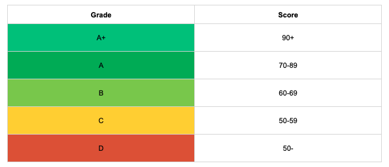

Introduction and Context
In today's professional landscape, the pursuit of sustainability has become paramount. Companies are under increasing pressure to adopt environmentally responsible practices and demonstrate their commitment to combating climate change. However, amidst this pursuit, there's a lurking challenge: greenwashing.
Greenwashing refers to the deceptive practice of conveying a false impression or providing misleading information about a company's environmental efforts. This can range from exaggerated claims of eco-friendliness to outright misinformation about a company's impact on the environment. Unfortunately, greenwashing has become a prevalent issue, as businesses seek to capitalize on the growing demand for sustainability without necessarily making meaningful changes.
Seperating genuine sustainability efforts from those with an alterior motive is becoming harder than ever, and so demonstrating when a company is making all the right steps has become a headache.
What are Climate Clarity Badges?
That's why we've created the Climate Clarity badges. These badges are designed to combat greenwashing by providing total transparency regarding a company's net-zero goals and efforts. At Alectro, we understand the importance of genuine sustainability efforts and recognize the need for clarity in communicating these efforts to stakeholders.
The Climate Clarity badges are the face of the Virtual Sustainability Officer®'s Climate Clarity Hub - a simple online hub to provide data, progress, and core reporting for a company's sustainability and net zero efforts. The badges themselves consolidate this information into an easy to recognise format that can be shared easily. The Climate Clarity badges empower companies to demonstrate their sustainability efforts, knowing that transparency is at the heart of the net zero transition.
The Climate Clarity Assessment Process
So, how exactly are Climate Clarity Badges awarded? The assessment process is rigorous yet straightforward, ensuring that only companies genuinely committed to sustainability receive the highest accolades.
At the end of each Reporting Period, a score between 0 - 100 is awarded based on the achievment in the following 6 categories: Measure, Engage, Reduce, Supply Chain, Act, Consistency.
The scoring criteria is outlined below:
| Category | Description | % |
|---|---|---|
| Measure | Assesses the depth of what has been measured across Scope 1,2, and 3. | 20% |
| Engage | Assesses what percentage of employees engaged with the Reporting Period assessment. | 20% |
| Reduce | Assesses the company's committment and achievment to emission reductions, in line with Science Based Targets guidance. | 30% |
| Supply Chain | Assesses how aligned the company's wider supply chain is with net zero efforts, and the influence the company is able to exert on their suppliers. | 10% |
| Act | Assesses the actions of the company to mitigate annual emissions through carbon offsets or removals. | 10% |
| Consistency | Rewards consistent and continuous actions across multiple Reporting Years. | 10% |
The Climate Clarity Results
The total score is then translated into a grade, from A+ to D, according to the following scores: 
These probably look familiar as they follow a well understood practice of transparency adopted by tools such as Energy Performance Certificates (EPC) and Food Labels.
How can I use my Climate Clarity Badge?
The Climate Clarity badge can then be used in a number of ways:
- The Badge: The Climate Clarity badge can be downloaded or copied from within the Admin Panel of the Virtual Sustainability Officer® and added to an email or website footer.
- The Public Page: The Climate Clarity Hub can be shared with the unique company url. This can be posted on social media, shared for tender processes, or be used in a variety of other situations
The score will update on an annual basis for live sharing.
Final Notes
As part of the continuous improvement of our rating system, this methodology and the resulting scores are subject to change. The absolute key goal of this initiative is to provide transparent climate scores, that can be compared like-for-like regardless of the business size or type.
Current climate scoring systems and "certifications" are limited, and unfortunately often contribute even further to greenwashing. Our goal is to provide a system that isn't a race to the bottom, but rather an honest and true reflection of how the company in questions is contributing to domestic, and global, climate goals.